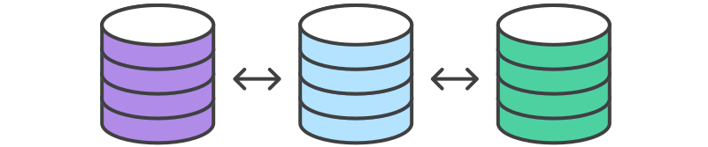

Centralized Workflow.

Goals
What is Version Control / Git
Why would anyone want to use version control?
Centralized Workflow
Practicum w/ Git Extensions
What is Version Control?
A process to monitor, track and manage changes in a file over time.
Often Ad hoc
big_project_01.ext
big_project_02.ext
big_project_02-fixed.ext
big_project_03-december-2012.ext
Sometimes formal
Track Changes in Word
Wikipedia History
Git / Subversion / Perforce / etc.
Why Version Control / Git?
Backup
History / Accountability
Collaboration / Peer Review
Reproducibility
Multiple versions of the same code base, each with a slightly different purpose or historical importance.
Terminology
Repository / Origin
Cloning
Branch
Commit
Pull / Push
Pull Request